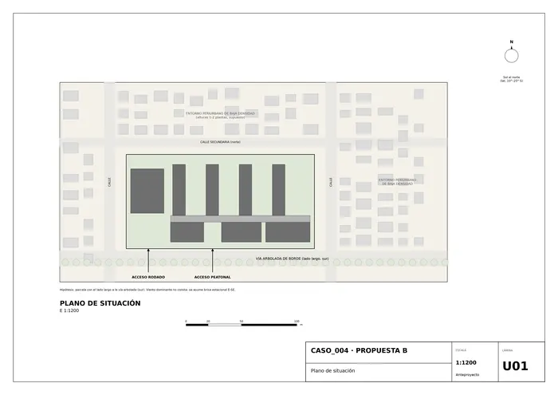
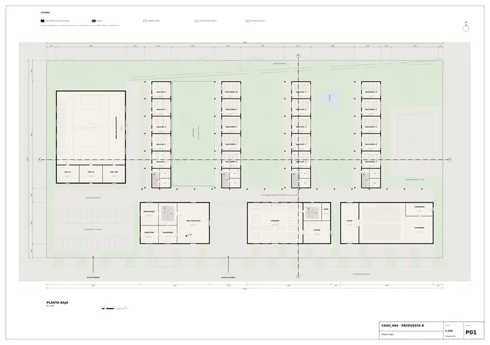
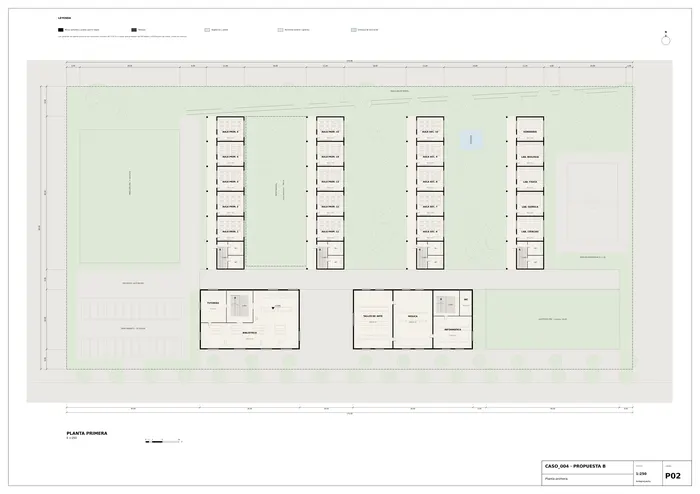
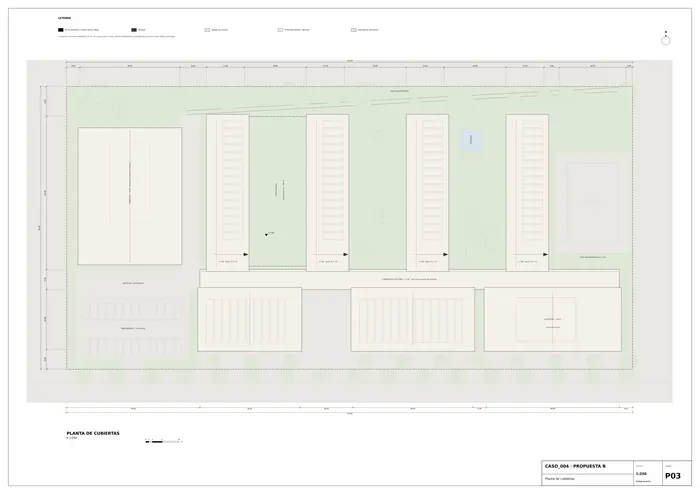
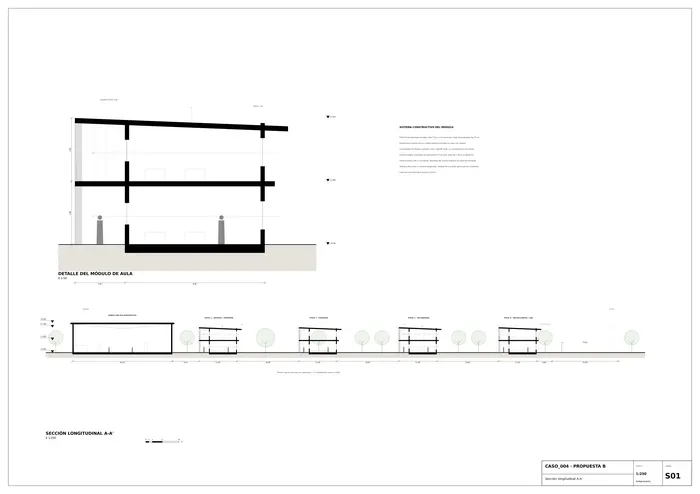
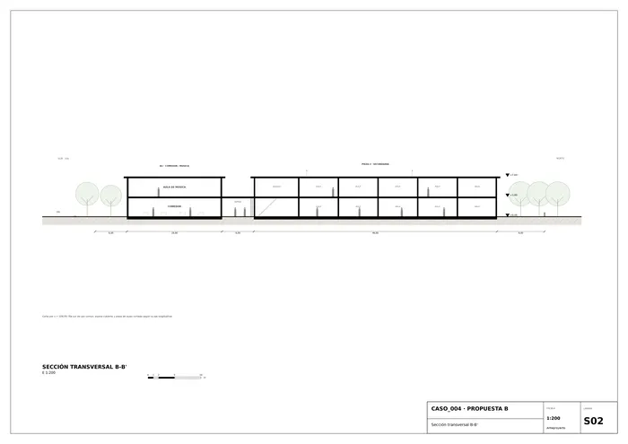
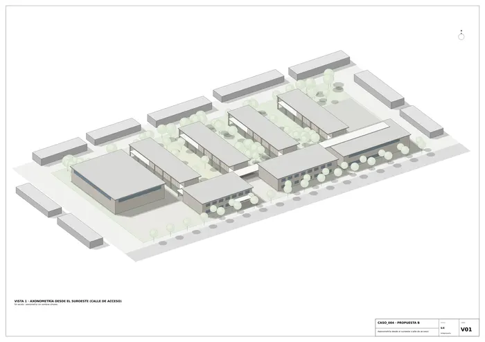
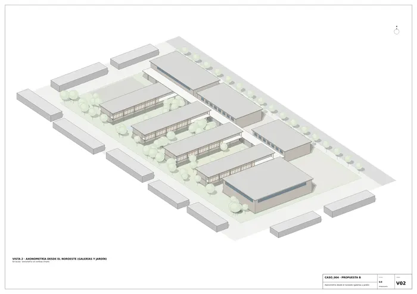

Caso 004 · JT Arquitetura (José Luiz Tabith) + Jean Dubus · 2016 · equipamiento educativo
Un colegio de la infancia al bachillerato entendido como un peine de pabellones estrechos sobre una calle cubierta. Cuatro piezas de aulas, de 11,40 × 46 m y dos plantas, se disponen en vertical (norte-sur) sobre una espina de circulación cubierta de 6 m que recorre la parcela de 170 × 85 m a lo largo. Entre piezas quedan tres jardines de 18,60 m, uno para cada edad. Los cuatro dedos se reparten por edades: infantil con primaria baja, primaria, secundaria y bachillerato con laboratorios. Cada alumno recorre así un gradiente de jardines, y los más pequeños tienen un patio propio, cercado y arbolado.
Del boceto se conservan: el recinto rectangular alargado y rodeado de árboles; la fila de piezas rectangulares paralelas y perpendiculares al lado largo; la banda horizontal que las une y que aquí es la calle cubierta; las zonas rayadas junto a cada pieza, que se transforman en galerías de sombra de 3 m; la fila baja de piezas largas junto a la vía, que pasa a ser la fila de usos comunes (administración y biblioteca, comedor y arte-música, auditorio); el bloque aislado a la izquierda, que es el pabellón polideportivo, y la línea inclinada, reinterpretada como paseo diagonal en el jardín norte. Lo nuevo: la orientación climática de las galerías (oeste), el aparcamiento y la recogida en el extremo oeste, y la pista exterior en el este.
El programa no fija superficies; se dimensiona aquí para unos 925 alumnos y unos 90 trabajadores (supuesto).
| Uso | m² útiles | Observaciones |
|---|---|---|
| Aulas de infantil (5) | 295 | planta baja, con patio propio |
| Aulas de primaria (15) | 886 | 59 m² cada una |
| Secundaria (10) y bachillerato (5) | 591 + 295 | |
| Especializadas y laboratorios (5 lab. + arte, música, informática) | 827 | |
| Biblioteca / documentación | 365 | planta primera, B1 |
| Comedor y cocina | 536 | |
| Auditorio, foyer, escenario | 693 | 442 butacas |
| Zona deportiva (pabellón y vestuarios) | 1.165 | |
| Administración, dirección y profesores + hall | 515 | |
| Circulaciones verticales y aseos | 732 | |
| Total útil rotulado | ≈ 6.900 | |
| Superficie construida cerrada | 7.387 | 8 plantas de aula, B1 y B2 a doble planta |
| Galerías (1.104) y espina cubierta (756) computadas al 100 % | 1.860 | |
| Superficie construida total | ≈ 9.250 | dentro del rango orientativo 9.000–15.000 m² |
Parcela: 14.450 m²; ocupación ≈ 4.300 m² (30 %), alturas máximas de 2 plantas (+7,60 m), salvo pabellón (+9,00 m).
Estructura de hormigón armado: muros de carga transversales de 25 cm cada 7,50 m que arriostran las piezas de aulas, pilares de 40 × 40 cm en las galerías y forjados de losa maciza de 30 cm. Grandes luces (comedor, biblioteca y auditorio) con vigas de canto en 14 × 18 m. Pabellón de cerchas ligeras de acero con cubierta cenital. Cerramientos de ladrillo/bloque cerámico visto y carpintería de madera o aluminio lacado en tonos apagados; lamas verticales de madera local en las galerías oeste; solera sobre encachado ventilado, sin sótano.
Nota: terreno supuesto plano (pendiente < 1 %), vientos dominantes E-SE y normativa de baja altura, al no constar datos en el encargo.

U01 · Plano de situación
P01 · Planta baja
P02 · Planta primera
P03 · Planta de cubiertas
S01 · Sección longitudinal A-A'
S02 · Sección transversal B-B'
V01 · Axonometría desde el suroeste (calle de acceso)
V02 · Axonometría desde el noroeste (galerías y jardín)Memoria de la propuesta tal como la entregó el sistema. Se han omitido las notas internas del proceso (revisiones, control de reconocimiento y referencias a archivos de trabajo).